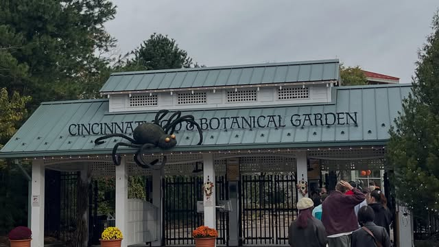

Halloween at the Zoo
Cincinnati Zoo & Botanical Garden
I spent Halloween at Cincinnati Zoo, where a giant spider hung over the entrance and the animals got pumpkins for enrichment. Nine of them tucked into their pumpkins, and ten more portraits rounded out the day, from a Malayan tiger to leaf-cutter ants. It was a fun, spooky day, and here are all twenty animals.

A Halloween visit to Cincinnati Zoo, starting at an entrance decorated with a large spider.
Nine of the animals are enjoying pumpkins as enrichment: a Malayan tiger, a pileated gibbon, an Indian elephant, a potto, Verreaux's eagle-owl, an African painted dog, Lady Ross's turaco, a bonobo, and leaf-cutter ants.
Ten more portraits round out the day: a Guam kingfisher, a snow leopard, a southern lapwing, a Florida box turtle, a clouded leopard, a hyacinth macaw, a red river hog, a sunbittern, a golden-handed lion tamarin, and a demoiselle crane colt.
I posted this on Facebook — open the original post →